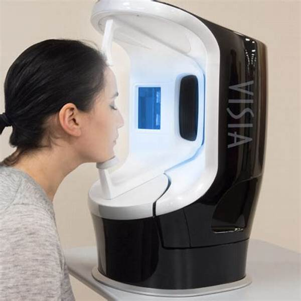

關於我們
專業醫美團隊
聯絡我們
☰
聯絡我們
『美 由我』 • 與你同在
關心肌膚狀態 • AI 肌膚檢測
『美 由我』美肌檢測儀
儀器目前為最新第七代，在軟硬體的設備與AI智能更大幅度提升
2800萬畫素：超越高清，真實地呈現皮膚細節紋理
檢測只需要2分鐘：高效率且快速檢視肌膚各項數值
多角度旋轉拍攝：患者無須更換坐姿及方向，
將臉部放置於分析儀校準器位置
分析儀會圍繞臉部從3個角度（正面/左側/右側）記錄表層和深層皮膚狀況
全球大數據預測：相較其他肌膚老化預測系統，此檢測結果於全球最大型的皮膚數據庫，跟同齡及同一膚色的肌膚作比對
精確檢測現時肌膚底層潛在老化問題，以及作出提早老化風險預測
<圖表量化呈現：以數據化圖表提供診斷報告，作出最合適的醫美治療
療程與肌膚定期追蹤：肌齡掌控系統為您的肌膚紋理進行完整紀錄，每次療程前後比對更精確
施展更有效率且完整化的醫學美容照護
